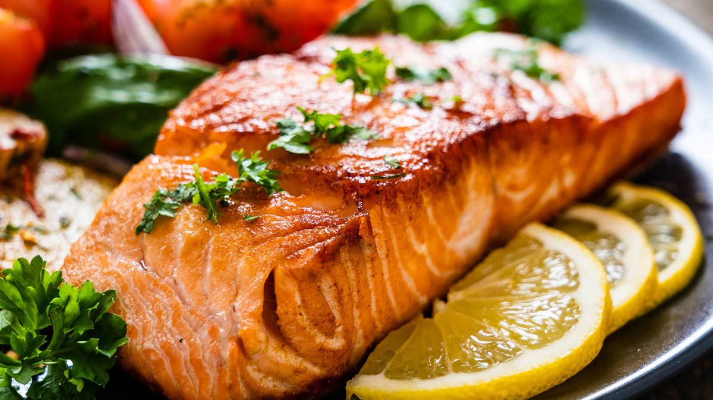

Description
The fish is marinated with lemon juice, olive oil, and Dijon mustard, coated in crushed black pepper, and pan-fried to perfection. Serve it with sautéed vegetables or your choice of sauce for a delicious meal!
Ingredients
- 250 gms King Fish Boneless
- 20 gms Dijon Mustard
- 20 ml Olive Oil
- Salt to taste
- 100 gms Crushed Black Pepper
- 50 gms Butter
- 1 spring Thyme
Steps
- In a bowl, mix Dijon mustard, salt, lemon juice, and olive oil to make a marinade. Marinate the fish for 10 minutes.
- On a plate, spread the crushed black pepper and coat one side of the marinated fish with the crust. In a heavy-bottomed pan, add olive oil and cook the fish for 3-4 minutes on each side.
- Add butter and thyme to a pan and baste the fish to make it more flavourful and juicy. Let the fish rest for 2-3 minutes. Serve with sautéed vegetables and your choice of sauce.